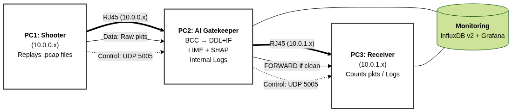
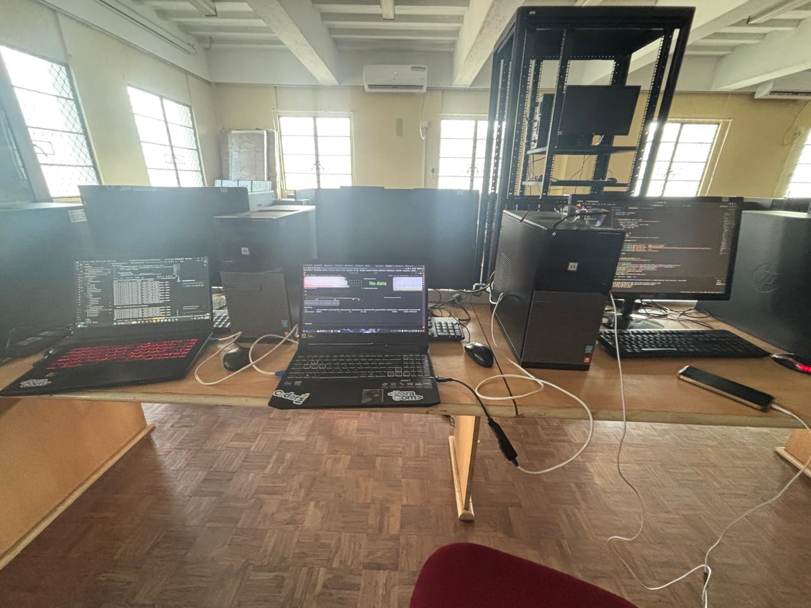
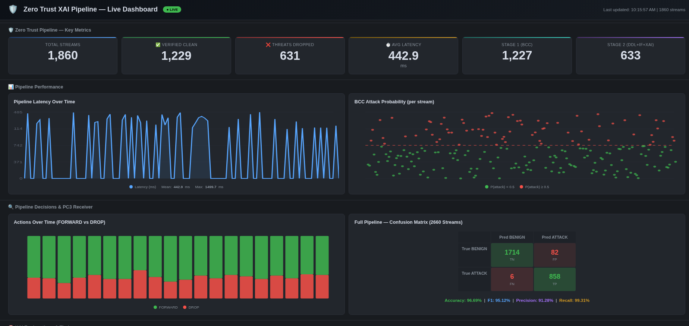
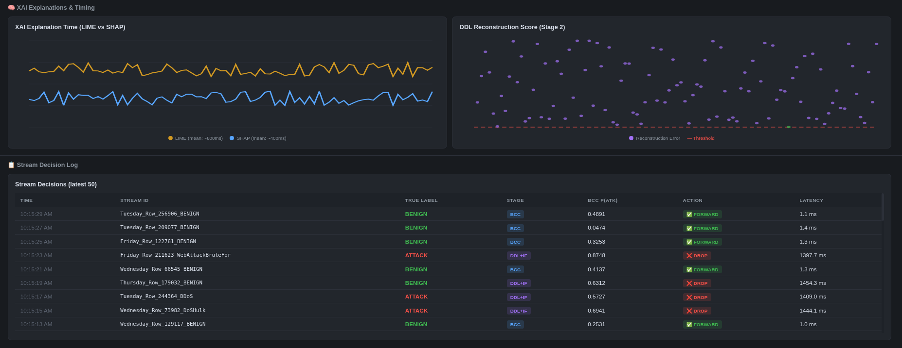

Explainable AI-Driven Zero-Trust Anomaly Detection for Encrypted Traffic
A two-stage pipeline combining header-only feature analysis, deep dictionary learning, and triple explainable AI for real-time encrypted traffic anomaly detection in zero-trust networks.
CO425 — Final Year Project | Department of Computer Engineering | University of Peradeniya
96.69%
Accuracy
99.31%
Attack Recall
91.28%
Precision
95.12%
F1 Score
~1.2 ms
Stage 1 Latency
01 Project Summary
Modern network attacks increasingly exploit encrypted channels such as TLS and HTTPS, rendering traditional deep packet inspection (DPI) ineffective. Existing intrusion detection systems (IDS) achieve high accuracy but incur prohibitive latency for real-time software-defined networking (SDN) environments. This project presents a two-stage anomaly detection pipeline that operates exclusively on IP and TCP packet header metadata, requiring no payload decryption — making it fully compatible with encrypted traffic.
The system design was informed by iterative experimentation on two candidate datasets: the BCCC Darknet dataset (25,588 samples, unlabelled) and the CIC-IDS-2017 benchmark (702,007 flows, expert-annotated). Initial experiments on BCCC Darknet using semi-supervised pseudo-labelling (Isolation Forest + Autoencoder consensus) validated the dual-model agreement principle but revealed limitations in precision (74.51%), anonymous features, and ground-truth validation. These findings directly shaped the final architecture.
Stage 1 deploys a Base Check Classifier (BCC), a Decision Tree trained on 28 header-only features with an aggressive attack-biased threshold (θ = 0.15), processing every incoming flow in approximately 1.2 ms with 99.964% attack recall on 179,869 real attack streams. Stage 2 analyses only BCC-flagged flows using Deep Dictionary Learning (DDL) and an Isolation Forest (IF) consensus voter — a flow is dropped only when both independent models agree it is anomalous, achieving a false negative rate (FNR) of 0.69% through dual-model agreement.
Explainable AI (XAI) is integrated via three complementary methods: DDL-native per-feature reconstruction error decomposition (zero overhead), SHAP (Shapley Additive Explanations), and LIME (Local Interpretable Model-agnostic Explanations). A cross-method agreement module computes set intersections across the top features from each method, providing a meta-level trustworthiness assessment of every DROP decision.
End-to-end evaluation on 3,000 real PCAP streams (2,660 valid) from CIC-IDS-2017 yields 96.69% accuracy, 99.31% recall, 91.28% precision, and a 95.12% F1 score with only 6 attacks leaked out of 864 (0.69% FNR). The pipeline was further validated on a physical 3-computer inline bridge testbed with iptables DROP-by-default enforcement, demonstrating true zero-trust operation on real network traffic with real-time Grafana monitoring.
The pipeline follows a two-stage design: Stage 1 (BCC) processes 100% of traffic as a fast gateway, forwarding benign flows in ~1.2 ms. Only flagged flows proceed to Stage 2 for deep analysis with DDL + Isolation Forest consensus voting, followed by triple XAI explanation.
Decision Tree on 28 IP/TCP header features with threshold θ = 0.15. Processes every flow at ~1.2 ms latency. 99.964% attack recall on 523,534 PCAP streams — only 64 leaks out of 179,869 attacks (0.036%).
🧠 Stage 2 — Deep Feature Analysis
Two-layer Deep Dictionary Learning (ISTA sparse coding, 40 features) + Isolation Forest (100 trees). Dual consensus: a flow is DROPped only when both models agree it is anomalous, multiplicatively reducing false positives.
💡 Triple XAI System
Three complementary explanations per DROP decision: DDL-native per-feature reconstruction error (zero overhead), SHAP KernelExplainer (~400 ms), and LIME TabularExplainer (~800 ms). Cross-method agreement analysis provides confidence scoring.
04 Physical Testbed & Validation
To validate the pipeline on real network traffic — not just CSV-based simulation — a physical 3-computer inline bridge testbed was constructed with iptables DROP-by-default enforcement, implementing true zero-trust semantics.

Architecture Diagram — Traffic flows from PC1 → AI Gatekeeper (PC2) → PC3 via Scapy Layer 2 forwarding.

Physical Setup — Laboratory implementation of the 3-computer inline bridge with USB Ethernet adapters.
Grafana Real-Time Monitoring Dashboard
A 13-panel Grafana dashboard backed by InfluxDB v2 provides real-time visualisation of pipeline decisions, latency, BCC probability distributions, XAI timing, and DDL reconstruction scores.

Dashboard Part 1 — Key metrics, BCC probability distributions, and latency tracking.

Dashboard Part 2 — XAI timing, DDL reconstruction scores, and real-time decision log.
05 Results
Stage 1: BCC Evaluation (523,534 PCAP Streams)
BCC DT Model (Real-World Test, 52,354 flows)
Metric
Value
Accuracy
98.65%
Attack Recall
99.89%
Attack Precision
96.31%
BENIGN Pass Rate
98.00%
DT Inference Speed
~42 µs/flow
Full BCC Pipeline (523,534 streams)
Metric
Value
Accuracy
98.72%
Attack Recall
99.964%
Leakage
64 / 179,869 (0.036%)
FPR
1.93%
BCC Confusion Matrix (52,354 Real-World Flows)
Pred. BENIGN
Pred. ATTACK
Actual BENIGN
33,679
688 (2.00%)
Actual ATTACK
20 (0.11%)
17,967 (99.89%)
Full Pipeline: 3,000-Stream Validation
A random subset of 3,000 PCAP streams (proportionally sampled from all 5 days of CIC-IDS-2017) was validated through the complete two-stage pipeline. 2,660 were successfully processed.
Metric
Value
Total Streams
3,000 (2,660 valid)
Accuracy
96.69%
Precision
91.28%
Recall
99.31%
F1 Score
95.12%
Stage 1 Only (fast pass)
1,714 streams (64.4%)
Stage 2 (deep analysis)
946 streams (35.6%)
False Positives
82 (benign flagged)
False Negatives
6 (attacks leaked)
FNR
0.69%
Full Pipeline Confusion Matrix (2,660 Valid Streams)
Pred. BENIGN
Pred. ATTACK
Actual BENIGN
1,714 (95.43%)
82 (4.57%)
Actual ATTACK
6 (0.69%)
858 (99.31%)
PCAP End-to-End Latency
Component
Latency
Applies To
BCC Feature Extraction
~1.1 ms
All flows
BCC DT Inference
~42 µs
All flows
Stage 1 Total
~1.2 ms
All flows
DDL Feature Extraction (40f)
~50 ms
BCC-flagged flows
DDL + IF Inference
~5 ms
BCC-flagged flows
LIME Explanation
~800 ms
DROP decisions
SHAP Explanation
~400 ms
DROP decisions
Stage 2 Total (with XAI)
~1.3 s
BCC-flagged flows
Weighted Average (Full Pipeline)
~463.1 ms
All flows
06 Conclusion
This project presented a two-stage explainable AI-driven anomaly detection pipeline for encrypted traffic operating within a zero-trust architecture. The system was designed through iterative experimentation: initial BCCC Darknet experiments validated the consensus voting principle, while CIC-IDS-2017 provided expert-labelled ground truth and interpretable features for the production system.
🛡️ Near-Zero Attack Leakage
BCC achieves 99.964% recall on 179,869 attack streams (64 leaks). Full pipeline: 99.31% recall on 3,000-stream validation with only 6 attacks leaked (0.69% FNR).
⚡ Real-Time Compatible
Stage 1 processes benign traffic in ~1.2 ms. 64.4% of flows are cleared at Stage 1 without deep analysis. Weighted average pipeline latency: ~463 ms.
🔍 Fully Explainable
Every DROP decision includes DDL-native error decomposition, SHAP, and LIME explanations with cross-method agreement analysis for high-confidence attribution.
🔬 Physically Validated
3-computer inline bridge testbed with iptables DROP-by-default enforcement demonstrates true zero-trust operation with real-time Grafana monitoring.
Publications
📝 Perera, C., Wanasinghe, J., Wijewardhana, S. et al.
"Explainable AI-Driven Zero Trust Anomaly Detection for Encrypted Traffic" (2025/26). In preparation.